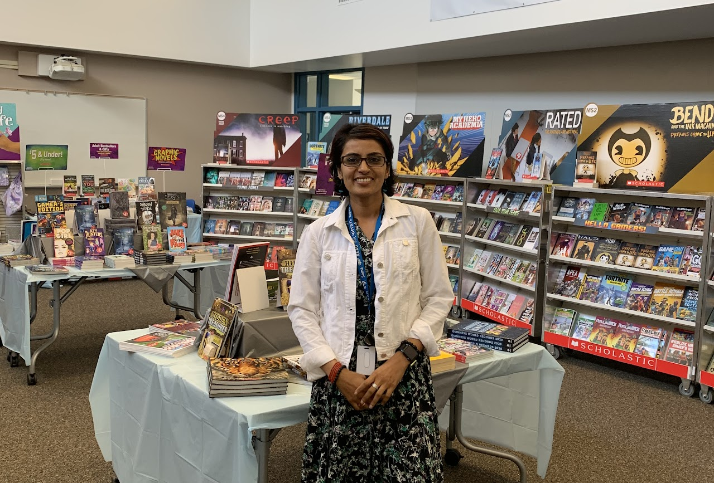

Welcome to the Hyde Middle School Library Center

I miss those days
I miss those years
When my library was packed
with exciting students' cheers.
When someone looking for paper
When someone looking for a book
And someone playing ROBLOX
And I had to give those looks.
When poor printer working hard
but affluent and popular among us all.
Wads of paper he barfed in brunch.
And I could listen to his “help me”call.
When desktops dancing at your tunes.
And furniture witnessing whispers loud.
The adjacent Community room will open
To hug and snuggle the extra crowd.
When corners filled with chats and gossips.
shhh makes its way to your ears.
Now consumed by an eerie silence
Rip my heart and roll down my tears.
Contiguous smiles, jubilant voices
Is what I now, desire and wish
Hyde library is always open
Reading is joyful and divine bliss.
-Mrs Agrawal